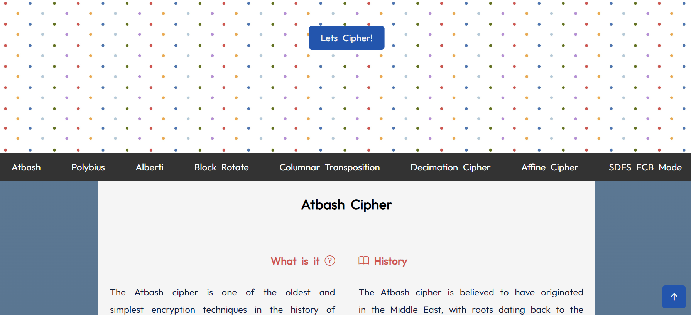
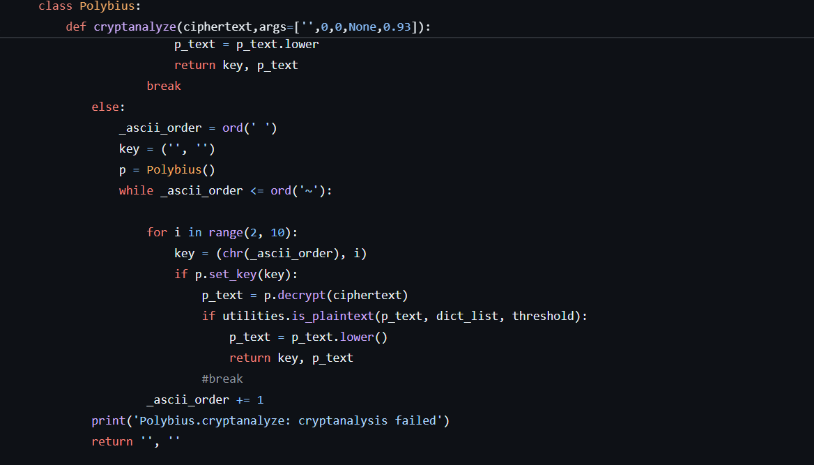
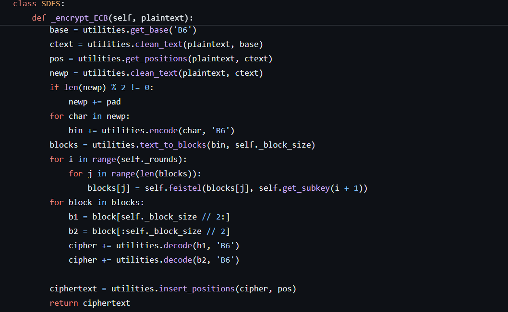

Chiphra
-

-

- 
- 
- 
Overview
We are thrilled to introduce Chiphra, an innovative and educational encryption and decryption website designed to demystify the world of cryptography. Chiphra is a pioneering platform tailored for learners eager to grasp the basics of cryptography. It offers an engaging and interactive experience that not only empowers users with the ability to encrypt and decrypt messages but also provides comprehensive educational resources to deepen their understanding.
Encryption Techniques:
- Atbash:
- The Atbash cipher, one of the earliest encryption methods, operates by replacing each letter with its reverse in the alphabet.
- Its historical usage dates back to ancient Hebrew cryptography.
- Users can explore the Atbash technique on my website and understand its simplicity and security limitations.
- Polybius:
- The Polybius cipher employs a 5x5 grid to encode letters and numbers, making it suitable for encoding messages with a limited character set.
- It was named after the Greek historian Polybius and was used by ancient Greeks and Romans.
- On my website, users can experiment with this grid-based cipher and grasp its utility in historical contexts.
- Alberti:
- Aberti is a lesser-known cipher that offers unique encryption patterns by rearranging the alphabet in a specific manner.
- Users can explore the Aberti cipher's distinctive features and potential applications in various cryptographic scenarios.
- Block Rotate:
- Block Rotate, also known as the Caesar cipher, involves shifting letters by a fixed number of positions in the alphabet.
- With a rich history dating back to Julius Caesar, this cipher has both educational and entertainment value.
- The website provides users with a chance to experiment with different rotation values and see the immediate results.
- Columnar Transposition:
- Columnar Transposition rearranges the characters or blocks of text to create an encrypted message.
- Its relevance extends to both military and civilian cryptography.
- On the website, users can visualize how this technique works by encrypting and decrypting messages.
- Decimation:
- The Decimation cipher employs a specific order of characters to encrypt text.
- Its flexibility makes it suitable for various applications.
- Users can explore different variations of the Decimation cipher on my website, gaining insights into its versatility.
- Affine:
- Affine encryption relies on mathematical operations to transform characters.
- Modular arithmetic plays a pivotal role in this cipher's security.
- Users can delve into the mathematical intricacies of the Affine cipher and witness its cryptographic strength in action.
- Simple-DES:
- Simple-DES (Data Encryption Standard) is a fundamental algorithm in modern cryptography.
- It involves key generation, permutation, and substitution to secure data.
- My website provides a simplified but instructive exploration of the Simple-DES algorithm, allowing users to understand its core principles.
Cryptanalysis Features:
- Method-specific Cryptanalysis: Each encryption method in my project is accompanied by its own cryptanalysis feature. These tools allow users to explore the vulnerabilities of each encryption technique.
- Educational Value: The cryptanalysis tools are designed to educate users on how to identify weaknesses and potentially decrypt messages encrypted with these methods.
- User Guidance: My project offers user guidance on how to use the cryptanalysis tools effectively. Users can follow step-by-step instructions to analyze and decrypt messages.
- Interactivity: The cryptanalysis features enhance the interactivity of my website. Users can not only encrypt and decrypt messages but also explore the cryptographic vulnerabilities of different methods.
- Real-world Significance: Understanding cryptanalysis is essential for both cybersecurity professionals and students. It helps individuals appreciate the importance of robust encryption methods and the need for continuous improvement in the field.
Code Implementation:
- Technology Stack: I used a diverse technology stack that includes Python, Flask, HTML, CSS, and JavaScript. Each technology played a crucial role in the development of this project.
- Object-Oriented Approach: I implemented each encryption method in a class, following object-oriented principles to ensure modularity and maintainability.
- Class Design: The code is organized with a focus on modularity, making it easy to add new encryption methods or update existing ones.
- Code Modularity: The modular structure of my code enhances maintainability and allows for seamless expansion of the project.
- Security Considerations: I ensured user data security by implementing robust error handling and user-friendly error messages.
Testing and Quality Assurance:
- There was a comprehensive test cases for each encryption and decryption method, covering various input scenarios to verify correctness and robustness.
- The code was rigorously tested, and it consistently produced accurate results, achieving 100% correctness.
- Input validation checks were implemented to ensure proper user data handling.
- The project's files for expected inputs and outputs, keys, and cryptanalysis tools contribute to its organized and reliable structure.
User Experience and Interface:
- The website features an intuitive and user-friendly interface that enhances the overall user experience.
- Detailed explanations and historical context for each encryption technique provide valuable educational content.
Educational Focus:
Chiphra's core mission is to serve as an educational resource, targeting individuals who wish to learn the fundamental principles of cryptography. The website adopts a structured approach to explain each encryption method, making it accessible to learners at various skill levels.
Acknowledgments:
I would like to express my sincere appreciation to my friend, Ibrahim Sanna, for his outstanding work on Chiphra. His creativity and dedication have greatly enriched the visual appeal and user experience of the website, making it an even more valuable resource for learners in the field of cryptography.
Future Plans:
Chiphra's commitment to education extends into the future, with plans to expand the range of educational content and cover advanced cryptographic topics. Chiphra is more than just a website; it's a gateway to the fascinating world of cryptography. As it continues to evolve and provide valuable educational resources, it stands as a testament to my dedication to fostering learning and knowledge in this field. I invite you to explore Chiphra and embark on your journey to mastering the fundamentals of cryptography.